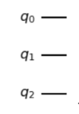
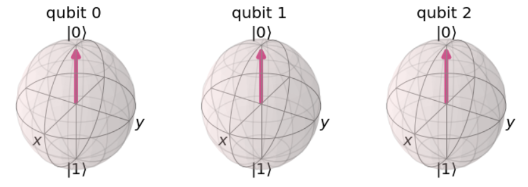
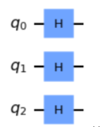
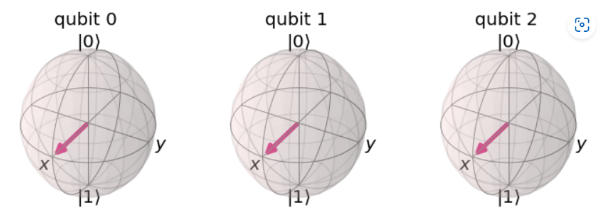
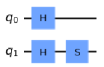
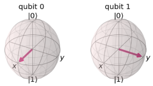
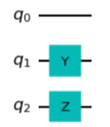
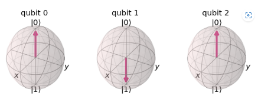
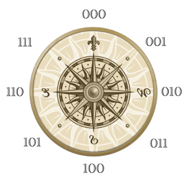

Hello! Welcome to Quantum Owl. An action survival game where you will help Owlsley, Fau’s mascot, defend the school from an imminent invasion. In this journey you will encounter many formidable enemies, zombies, robots, anything!
Use your quantum knowledge to traverse the one safe space left.
★ Objective
It's simple, all you have to do is survive.
★ How to Play
-
How to input quantum gates:
- 1. Type in the gate you want
- 2. Use the left and right arrow keys to pick your gate, then press enter
-
How to control your character:
- 1. Input your quantum gate
- 2. Press 'SPACE' to stop moving
-
How to attack:
- 1. Press the Left Control Key
★ Simple Guide to Quantum Computing:
In quantum computing, you have a circuit. Let’s use an empty movement circuit as an example.

This circuit has three qbits. q0, q1, and q2. This can also be observed as three spheres:

Notice they’re all at 0. This means that, when observed, they will always resolve to 0. You do nothing to this circuit, your result will be 000, every single time.

But in the game, there are three H gates. H gates put qubits into a superposition. A superposition means that the qubits will always resolve randomly.

See? Each gate is now in between 0 and 1. So when the circuit is resolved, it can either be 1 or 0, but it’s completely random.
Let’s see what other gates do:
i : An i gate is like multiplying something by 1. In matrix multiplication, multiplying one matrix by i returns the same matrix. It’s the same here.
s: s gates rotate the qbit ¼ th of the way around the z axis. See this gate and its multivector:


t: A t gate rotates ⅛ th of the way around the t axis, like this:
x y z: these gates are opposite gates. They switch the likelihoods across their axes. So see, x and y both turn the 0 into a 1, but the z gate does nothing.


★ Direction

000 - North
001 - North-East
010 - East
011 - South-East
100 - South
101 - South-West
110 - West
110 - North-West
★ Interested in quantum computing?
Check out the links below :